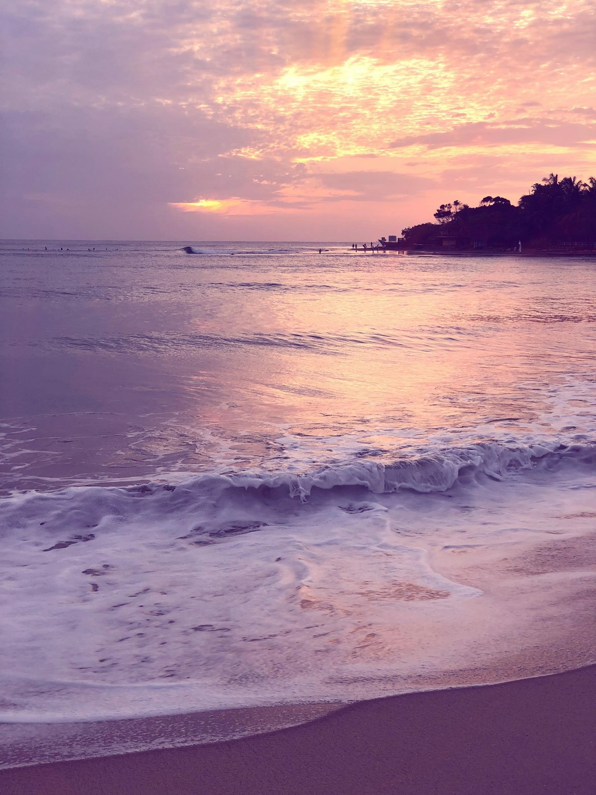

Nothing feels better than a warm sunny day at the beach... lucky for you, Sri Lanka is surrounded by a multitude of beaches. From coarse sand to very silky, here's our top picks for your journey!
Unawatuna Beach
Just a 9 minute drive away from the city of Galle, is the beautiful cove-beach of Unawatuna. With fine sands, shady spots underneath coconut trees and a shallow cove, you're bound to have oe of the most relaxing swims you've ever taken. Whether it's with children or with your partner, there's multiple activities you can do here at Unawatuna beach, and here's our picks for you!
- Snorkelling
- Coral tours
- Boat tours from the beach to Galle
You can check out more activities to do over here.
Our top rated guests reccomend this hotel for you for your stay!
Mirissa Beach
About an hour south of Galle is Mirissa beach, with its fine sands and gently sloped shores, this beach too is amazing for relaxation. Clubs and restaurants along the beach are always open at night and are ready to party if you want to have a more memorable time there!
Mirissa beach is also known as a good location for whale watching and also, another famour landmark, "Coconut tree Hill".
Our top rated guests reccomend this hotel for you for your stay!
Arugam Bay
11 minutes down from Pottuvil is one of the most popular beaches in all of Sri Lanka, Arugam Bay. Unlike the earlier beaches, this is where you can find a lot of activities to keep that adrenaline running! The most popular activity you'll find over there is surfing! With waves as high as 3 meters, you would be up for quite a task. There are several bars and restaurants to keep your day fully active and the locals even do surf training!
Our top rated guests reccomend this hotel for you for your stay!